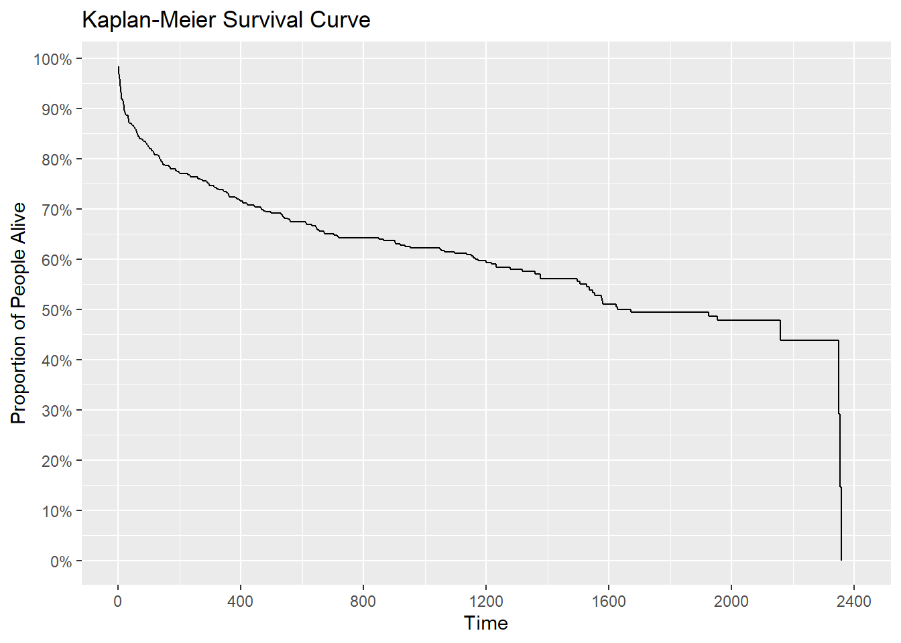
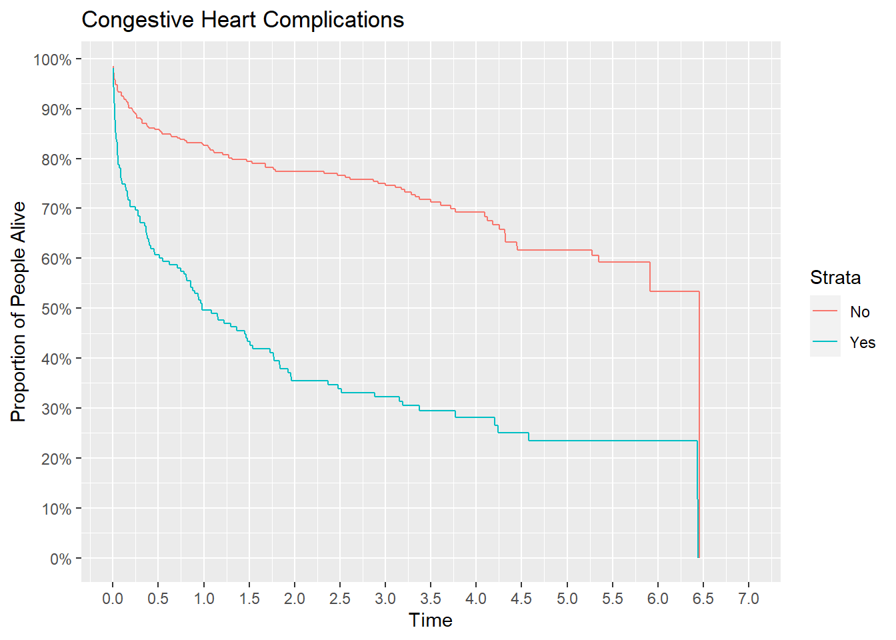
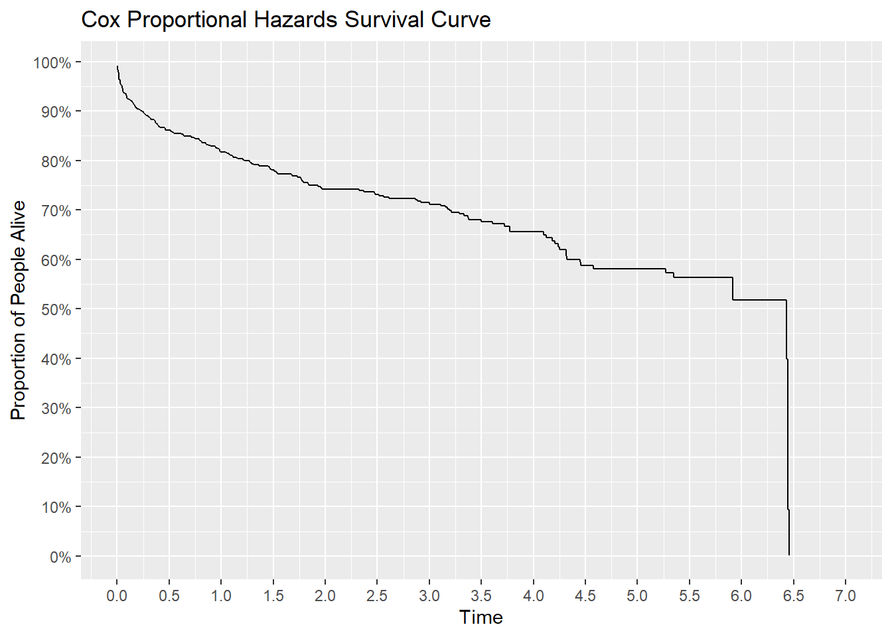
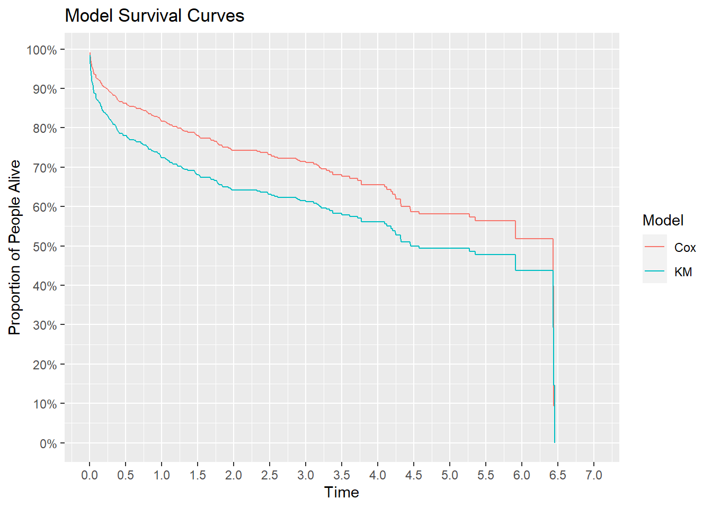

# A tibble: 3 × 2
Time Event
<dbl> <dbl>
1 1 0
2 2 1
3 3 1Repo Overview
This repo explores two classic statistical models for survival analysis using patients who experienced myocardial infarctions.
Models:
- Kaplan-Meier
- Cox Proportional Hazards
Censoring
Right censoring occurs when the event of interest is yet to be observed for some data. Examples include time to death for patients with a terminal illness, time to relapse for patients in rehab, or time to service termination for customers. Here are three hypothetical data points.
The average of time is not two. Due to the first observation being censored, the average is at least two. Unless all data points are uncensored, this “at least” affects all summary statistics, hypothesis tests, and models. Survival analysis is the area of statistics designed to deal with this notion of “at least” inherent in the data.
Data Overview
The data set includes 500 patients who suffered a heart attack.
Variables:
- id - Identification Code (1 - 500)
- age - Age at Hospital Admission (years)
- gender - Gender (0 = Male, 1 = Female)
- hr - Initial Heart Rate (Beats per minute)
- sysbp - Initial Systolic Blood Pressure (mmHg)
- diasbp - Initial Diastolic Blood (mmHg)
- bmi - Body Mass Index (kg/m^2)
- cvd - History of Cardiovascular Disease (0 = No, 1 = Yes)
- afb - Atrial Fibrillation (0 = No, 1 = Yes)
- sho - Cardiogenic Shock (0 = No, 1 = Yes)
- chf - Congestive Heart Complications (0 = No, 1 = Yes)
- av3 - Complete Heart Block (0 = No, 1 = Yes)
- miord - MI Order (0 = First, 1 = Recurrent)
- mitype - MI Type (0 = non Q-wave, 1 = Q-wave)
- year - Cohort Year
- admitdate - Hospital Admission Date
- disdate - Hospital Discharge Date
- fdate - Date of last Follow Up
- los - Length of Hospital Stay
- dstat - Discharge Status from Hospital (0 = Alive, 1 = Dead)
- lenfol - Total Length of Follow-up
- fstat - Vital Status at Last Follow-up (0 = Alive 1 = Dead)
The first ten rows look like
# A tibble: 500 × 22
id age gender hr sysbp diasbp bmi cvd afb sho chf av3
<dbl> <dbl> <dbl> <dbl> <dbl> <dbl> <dbl> <dbl> <dbl> <dbl> <dbl> <dbl>
1 1 83 0 89 152 78 25.5 1 1 0 0 0
2 2 49 0 84 120 60 24.0 1 0 0 0 0
3 3 70 1 83 147 88 22.1 0 0 0 0 0
4 4 70 0 65 123 76 26.6 1 0 0 1 0
5 5 70 0 63 135 85 24.4 1 0 0 0 0
6 6 70 0 76 83 54 23.2 1 0 0 0 1
7 7 57 0 73 191 116 39.5 1 0 0 0 0
8 8 55 0 91 147 95 27.1 1 0 0 0 0
9 9 88 1 63 209 100 27.4 1 0 0 1 0
10 10 54 0 104 166 106 25.5 1 0 0 0 0
# ℹ 490 more rows
# ℹ 10 more variables: miord <dbl>, mitype <dbl>, year <dbl>, admitdata <chr>,
# disdate <chr>, fdate <chr>, los <dbl>, dstat <dbl>, lenfol <dbl>,
# fstat <dbl>Kaplan-Meier Model
The Kaplan-Meier model is a non-parametric model. This model makes no distributional assumptions about survival time. The main output is a survival curve.

According to the curve, an estimated 70% of patients live at least 1.25 years after being admitted to the hospital for a myocardial infarction.
The KM approach can be used to compare different groups. Are congestive heart complications associated with worse survival? Visually, the green survival curve is much lower than the red survival curve indicating patients with complications die sooner than patients without.

Could this difference in survival be attributed to random chance alone? The log rank test shows a p-value below 5% indicating no. Complications are associated with worse survival.
Call:
survdiff(formula = Surv(lenfol, fstat) ~ afb, data = whas500_02)
N Observed Expected (O-E)^2/E (O-E)^2/V
afb=0 422 168 184.8 1.52 10.9
afb=1 78 47 30.2 9.31 10.9
Chisq= 10.9 on 1 degrees of freedom, p= 0.001 The Kaplan-Meier model can be used as a descriptive tool or a inference tool. For inference, all other factors are ignored. This possible issue is addressed by the next model.
Cox Proportional Hazards Model
The Cox Proportional Hazards model is an inference tool that controls other variables that possibly influence survival time. It does this my assuming a semi-parametric relationship between the hazard function and explanatory variables. With this model, a survival curve can be calculated.

According to this model, an estimated 70% of patients live at least 3.25 years after being admitted.
coef exp(coef) se(coef) z Pr(>|z|)
age 0.05723802 1.0589078 0.006417813 8.918617 4.721482e-19
chf 0.84655007 2.3315891 0.144915759 5.841670 5.168004e-09
sho 1.05101250 2.8605460 0.267750715 3.925340 8.660745e-05
gender -0.18200553 0.8335967 0.141142629 -1.289515 1.972191e-01
mitype -0.41349385 0.6613356 0.178263485 -2.319566 2.036439e-02According to the model (and ignoring the inflated type I error rate), risk of death increases with:
- Increases in age
- Congestive heart complications
- Cardiogenic shock
Risk of death decreases with:
- Being male
- Having a Q-wave heart attack instead of a non Q wave.
Note Q-wave itself may not be protective. It is possible Q-wave heart attacks are easier to identify leading to earlier patient escalation and therefore better survival.
Survival Curve Comparison
The two models lead to meaningfully different survival curves. This is due to the difference in model assumptions. Under the hood, the Proportional Hazards model uses the Nelson-Aalen estimator of survival instead of the Kaplan-Meier estimator.

The K.M. estimator will never be greater than the N.A. estimator. Depending on observed data, it is possible the two estimators are functionally equal.